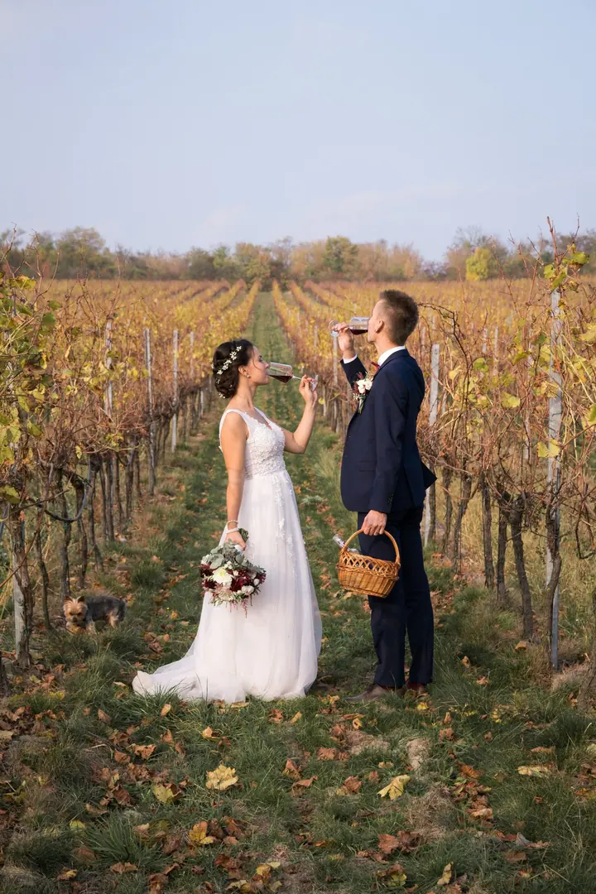
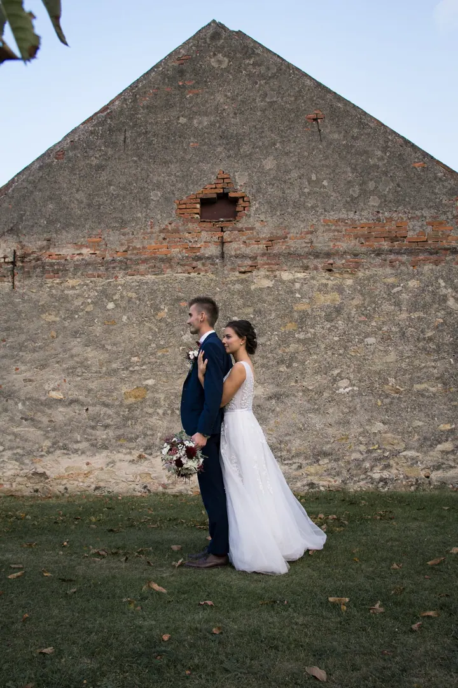
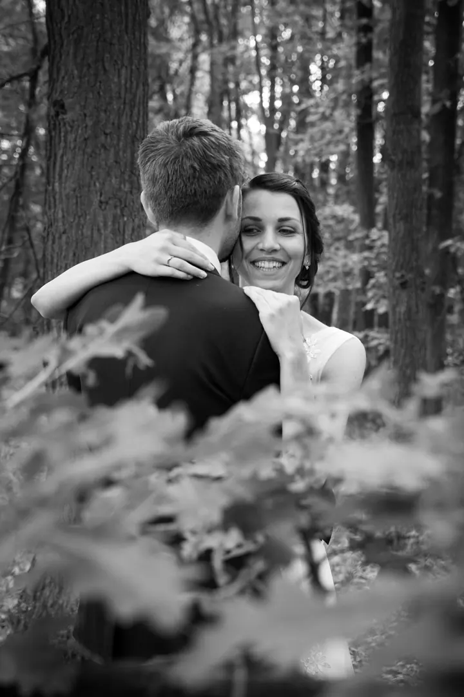
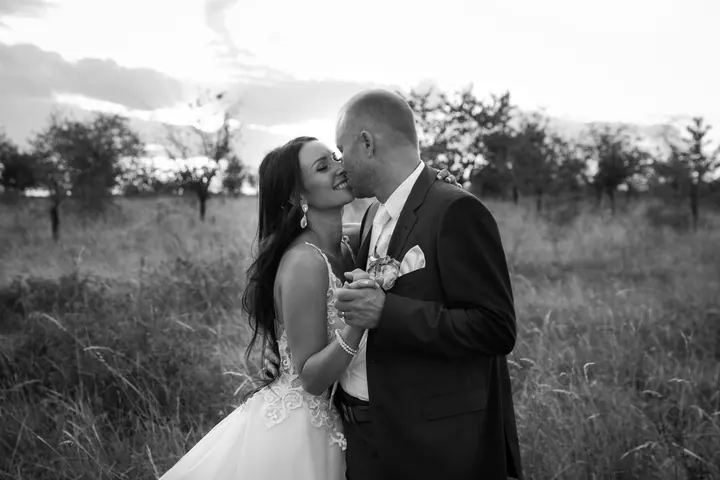

jedna
Svatby
Fotím celý den od příprav až do večera, nebo jen obřad, skupinovky a novomanželské fotky. Snažím se zachytit jedinečnou atmosféru každé svatby: emotivní chvíle, smích, pláč i poskakující děti.

Svatební a rodinná fotografka · Znojmo, okolí Znojma

Jmenuji se Ivana Habrová a pod značkou I.S. photography fotím svatby ve Znojmě a okolí. Baví mě láska mezi nevěstou a ženichem, pýcha v očích mámy, když chová své dítě, i radost rodiny být prostě jen spolu.
Více o mně
Co fotím
jedna
Fotím celý den od příprav až do večera, nebo jen obřad, skupinovky a novomanželské fotky. Snažím se zachytit jedinečnou atmosféru každé svatby: emotivní chvíle, smích, pláč i poskakující děti.
Hodinové rodinné a lifestyle focení, při kterém děti hlavně baví. Dostanete minimálně 15 upravených fotografií v digitální podobě.
Uvolněné focení ve dvou nebo portréty jen pro vás. Budu vtipkovat, aby z vás opadla tréma, a zpoza foťáku vám říkat, jak moc vám to sluší.
Fotím narozeninové oslavy, plesy, firemní akce i nemovitosti. Cenu domluvíme individuálně podle toho, co budete potřebovat.
Smích, pláč a jiskření mezi novomanželi.

Za objektivem
První zrcadlovku jsem si koupila s tím, že budu fotit zvířata a přírodu, dvě věci, které miluju. O focení lidí jsem nestála. Pak mě kamarádka požádala, abych jí nafotila svatbu. Nejdřív jsem o tom nechtěla ani slyšet, ale nakonec jsem se sevřenou dušičkou šla. Fotky se líbily natolik, že se mi začali ozývat první zákazníci, a tak jsem dnes hlavně svatební fotografka.
U svateb jsem zůstala kvůli tomu, kolik se toho během dne odehraje. Emotivní chvíle, smích, pláč, poskakující děti, jiskření mezi novomanželi a radost svatebčanů. Předám vám co nejvíc povedených snímků bez ohledu na to, kolik času mi to zabere. Budu vtipkovat, aby z vás opadla tréma, a zpoza foťáku vám budu říkat, jak moc vám to sluší.
I.S. byly kdysi moje iniciály, Ivana Svobodová. V roce 2020 jsem se vdala a jsem z ní Ivana Habrová, ale název jsem si chtěla nechat beze změny. Moji klienti jsou pro mě mnohem víc než klienti. Jsou to přátelé a mám radost, když se ke mně vracejí.
Ivana
Napište mi nebo zavolejte a pošlete termín a místo vaší svatby nebo focení. Ráda se s vámi seznámím.
Vyberete si celý den, šest hodin nebo jen obřad. Když vám nesedí ani jeden, společně vymyslíme balíček ušitý na míru.
Budu u toho, co se děje, a budu vtipkovat, aby z vás opadla tréma. Hlídám si emoce, detaily i to, aby děti byly z focení nadšené.
Upravím a předám vám všechny povedené fotky v digitální podobě. Často jich je víc, než kolik garantuje balíček.
Portfolio
Otázky
Pro rok 2025 stojí celý den (zhruba 12 hodin) 16 000 Kč, balíček To nej na 6 hodin 12 500 Kč a Minimum s obřadem, skupinovkami a novomanželskými fotkami 8 000 Kč.
U celého dne garantuji minimálně 300 fotografií, u šesti hodin 200 a u balíčku Minimum 100. Snažím se upravit všechny povedené, takže jich bývá i víc.
Do 30 km od Znojma jezdím zdarma. Při delší cestě si započítám něco málo za dopravu.
Hodinové focení stojí 1 800 Kč a zahrnuje minimálně 15 upravených fotografií v digitální podobě. Vyvolání fotek je možné, ale v ceně není.
Napište pár vět o tom, co si představujete. · +420 799 501 413